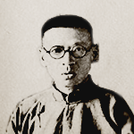

许慎
字叔重，汉族学者。东汉汝南郡召陵县人，许慎倾尽毕生精力，从事于弘扬和发展中国传统文化。《说文解字》是许慎一生最经心之作。
字叔重，汉族学者。东汉汝南郡召陵县人，许慎倾尽毕生精力，从事于弘扬和发展中国传统文化。《说文解字》是许慎一生最经心之作。
916年—991年
顾炎武
汉族，明朝南直隶苏州府昆山千灯镇人，本名绛，乳名藩汉，亦自署蒋山佣；南都败后，因为仰慕文天祥学生王炎午的为人，改名炎武。
汉族，明朝南直隶苏州府昆山千灯镇人，本名绛，乳名藩汉，亦自署蒋山佣；南都败后，因为仰慕文天祥学生王炎午的为人，改名炎武。
不详

段玉裁
清代文字训诂学家、经学家，字若膺，号懋堂，晚年又号砚北居士，江苏金坛人。乾隆举人，历任贵州玉屏、四川巫山等县知县。
清代文字训诂学家、经学家，字若膺，号懋堂，晚年又号砚北居士，江苏金坛人。乾隆举人，历任贵州玉屏、四川巫山等县知县。
1736年—1805年

王筠
字贯山，号箓友，山东安丘县宋官疃人，清代语言学家，文字学家。父亲王驭超，历任遂宁、潜山、霍丘、阜阳知县，升寿州知州。
字贯山，号箓友，山东安丘县宋官疃人，清代语言学家，文字学家。父亲王驭超，历任遂宁、潜山、霍丘、阜阳知县，升寿州知州。
1869年—1936年

黄侃
中国近代民主革命家、辛亥革命先驱、著名语言文字学家。湖北省蕲春县人。1905年留学日本，在东京师事章太炎，为章氏门下大弟子。
中国近代民主革命家、辛亥革命先驱、著名语言文字学家。湖北省蕲春县人。1905年留学日本，在东京师事章太炎，为章氏门下大弟子。
1905年—1988年
约公元58年—公元149年
徐铉
南唐，北宋初年文学家、书法家。字鼎臣，广陵人。历官五代吴校书郎、南唐知制诰、翰林学士、吏部尚书，后随李煜归宋，官至散骑常侍。
南唐，北宋初年文学家、书法家。字鼎臣，广陵人。历官五代吴校书郎、南唐知制诰、翰林学士、吏部尚书，后随李煜归宋，官至散骑常侍。
1613年—1682年
朱骏声
中国清代文字学家。字丰芑，号允倩，道光乙酉举人，官扬州地教谕。晚年又号石隐，清代大学者，自署元和人。 雍正二年（1724）分江苏省长洲县置元和县。
中国清代文字学家。字丰芑，号允倩，道光乙酉举人，官扬州地教谕。晚年又号石隐，清代大学者，自署元和人。 雍正二年（1724）分江苏省长洲县置元和县。
1735年—1815年

桂馥
字未谷，一字东卉，号雩门，别号萧然山外史，桂馥书法晚称老苔，一号渎井。乾隆五十五年（1790）进士，官云南永平县知县。
字未谷，一字东卉，号雩门，别号萧然山外史，桂馥书法晚称老苔，一号渎井。乾隆五十五年（1790）进士，官云南永平县知县。
1784年—1854年
章太炎
浙江余杭人。原名学乘，字枚叔，后易名为炳麟。因反清意识浓厚，慕顾绛（顾炎武）的为人行事而改名为绛，号太炎。
浙江余杭人。原名学乘，字枚叔，后易名为炳麟。因反清意识浓厚，慕顾绛（顾炎武）的为人行事而改名为绛，号太炎。
1886年—1935年
陆宗达
训诂学家，字颖民，浙江省慈溪人。曾历任上海暨南大学讲师，北京大学预科讲师、辅仁大学讲师、北京师范大学教授等。
训诂学家，字颖民，浙江省慈溪人。曾历任上海暨南大学讲师，北京大学预科讲师、辅仁大学讲师、北京师范大学教授等。